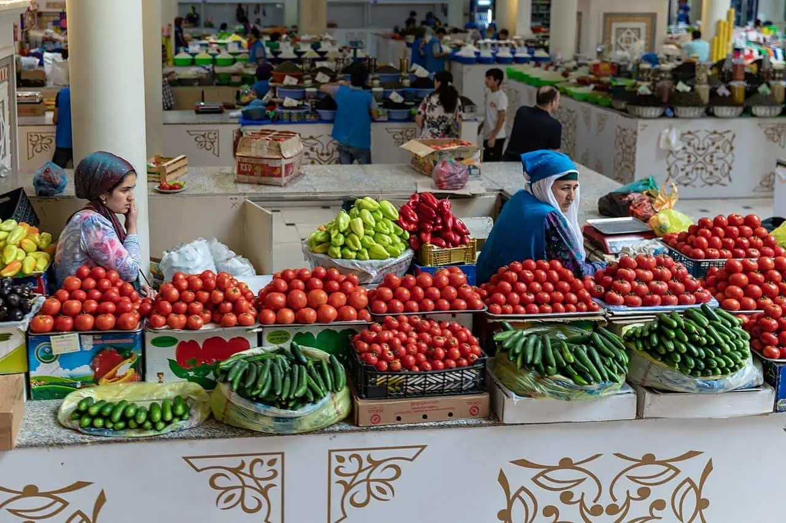
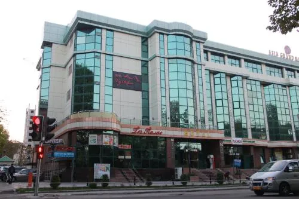
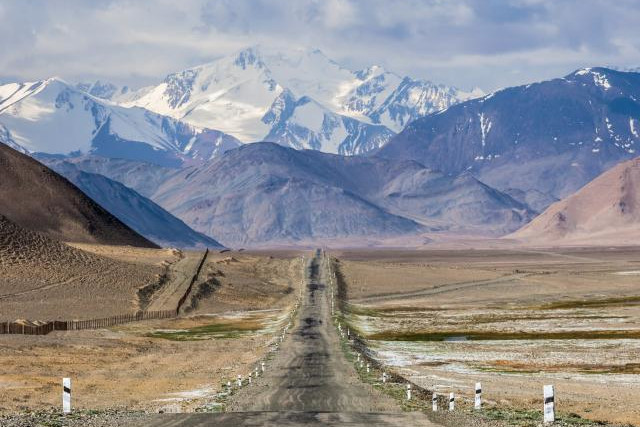

IradOne News
The latest from Talas, Nurzhan, Iyık Janyl and the region.
-

Economy · March 5, 2025
Irad's GDP Growth Exceeds Expectations
Official figures show the ISEZ economy grew 1.5% last year, ahead of forecasts, on beef exports and refinery output.
-

Culture · February 18, 2025
Talas Hosts International Film Festival
The Irad Film Society's biennial festival opens with films from more than five countries and a restored Iradi Western.
-

Regional · February 10, 2025
Irad and Uzbekistan Strengthen Bilateral Relations
Talas and Tashkent sign a trade and border-coordination memorandum, the first since the 2018 rangeland clashes.